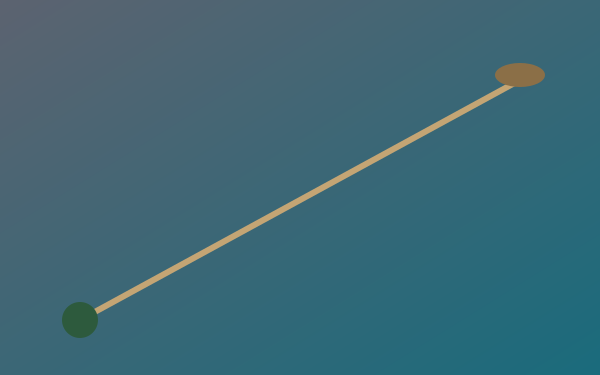
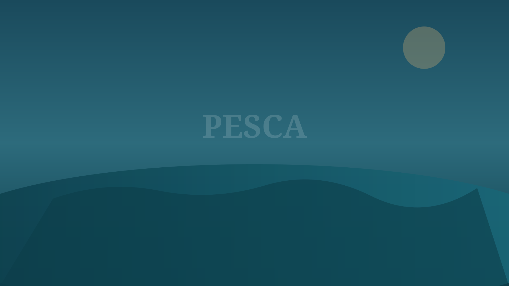
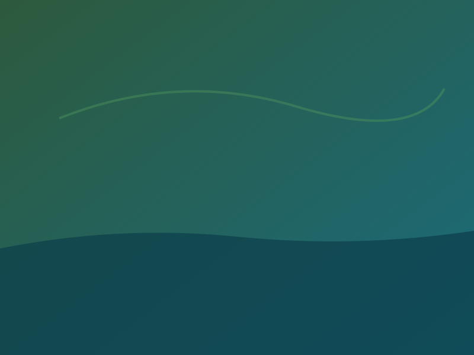
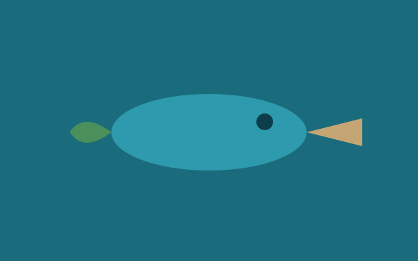
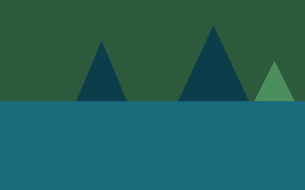
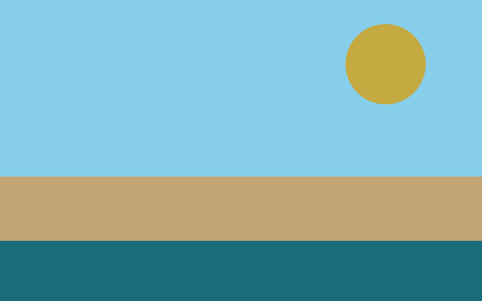
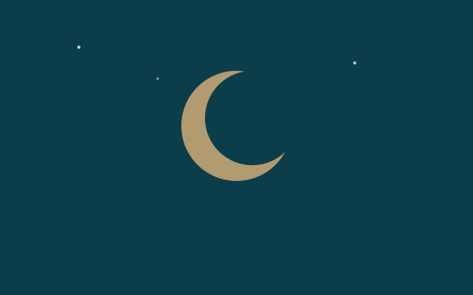
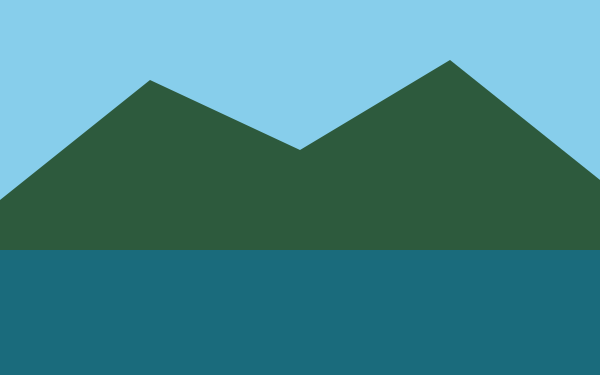
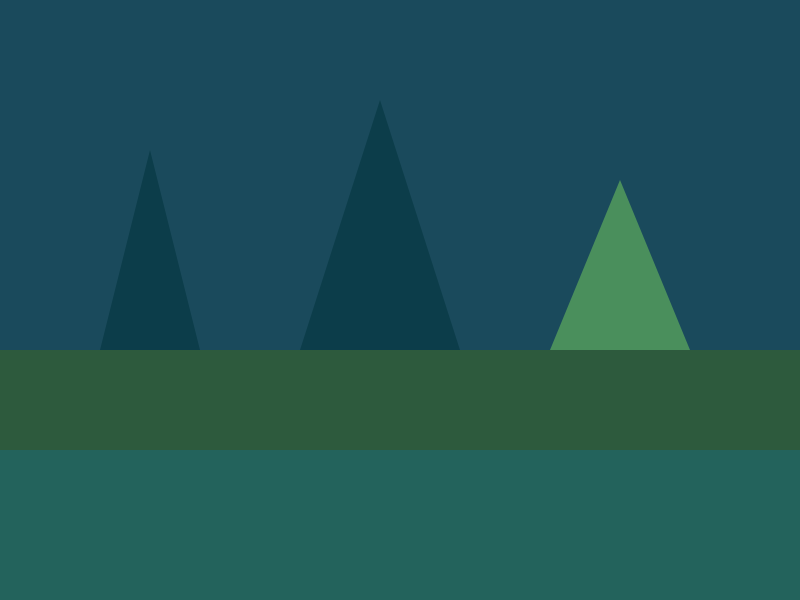

Equipamentos
Como Escolher sua Primeira Carretilha de Pesca
Guia honesto para iniciantes: perfil, freio, manutenção e o que realmente importa no dia a dia.

🌊 Blog independente · Experiência real de pescadores
Dicas reais, reviews honestos e os melhores lugares para você viver sua paixão pela pesca — sempre com respeito à natureza e à legislação.

O Águas Abertas é um blog independente de pesca amadora e esportiva, mantido pela Prime Administradora (Prime Administradora e Legalizacao LTDA). Compartilhamos o que aprendemos na prática: técnicas, equipamentos, destinos e histórias reais.
Não somos órgão governamental nem instituição oficial. Não realizamos licenças de pesca nem serviços do IBAMA ou de órgãos públicos. Prestamos apenas conteúdo informativo e relatos de experiências de pescadores amadores.
Toda pesca deve ser praticada com responsabilidade e dentro da legislação vigente no seu estado e município.
Conheça Nossa HistóriaConteúdo de valor para fortalecer sua técnica e escolher os melhores equipamentos e destinos.

Guia honesto para iniciantes: perfil, freio, manutenção e o que realmente importa no dia a dia.

Lista com estrutura, espécies, preços médios e dicas de conservação — sempre dentro da lei.
Entenda fases da lua, temperatura da água e comportamento do peixe — sem promessas milagrosas.
Modalidades, iscas, equipamentos e calendário — conhecimento aplicável na sua próxima pescaria.

Comparativo prático para rio, represa e mar — baseado em experiência de campo.

Vara, molinete, linha e montagem simples para começar com segurança.

Referência sazonal — resultados variam conforme clima, local e técnica.
Análises honestas de varas, carretilhas, linhas e acessórios — compramos, testamos e contamos a verdade.
Prós, contras e para quem realmente compensa. Links de afiliado identificados.
Teste de resistência, memória e nó em condições reais de pescaria.
Modelos testados por pescadores da equipe — sem patrocínio oculto.
Alguns links podem ser de afiliados. Recebemos comissão sem custo extra para você — sempre indicamos o que usamos de verdade.
Pesqueiros, rios, represas e costa — informações públicas e experiências documentadas, sem locais ilegais.

Estrutura, espécies liberadas e regras de pesque-pague — confira licenças exigidas.
Calendário de defeso, tamanhos mínimos e práticas de soltar o peixe.
Conservação, tamanhos legais, épocas de defeso e educação ambiental para as próximas gerações.
A pesca amadora só faz sentido com rios, lagos e mares saudáveis. Publicamos guias sobre pesca e soltar, descarte correto de linha e isca, respeito ao defeso e combate à pesca predatória.
Para licenças, regulamentação e fiscalização, consulte sempre os órgãos oficiais competentes (IBAMA, órgãos estaduais e municipais). Nós não emitimos nem intermediamos licenças.
Política de Transparência
Do primeiro arremesso ao manejo de peixes maiores — passo a passo claro e seguro.
Download gratuito: espécies, montagem e conservação de iscas vivas e naturais.
Baixar Guia GrátisDocumentação, equipamento básico, nós essenciais e etiqueta na beira da água.
Ler GuiaTécnicas para aumentar suas chances — sem prometer resultado garantido.
Ler GuiaDepoimentos de leitores que usam nossas dicas no dia a dia — experiências reais, resultados variados.
“Finalmente um blog que não promete peixe em todo post. As dicas de tilápia em represa funcionaram na minha terceira ida — antes eu ia sem planejamento.”
“O review da carretilha me salvou de comprar errado. Transparência nos links de afiliado e comparação honesta. Recomendo o grupo do WhatsApp.”
“Gosto do foco em pesca responsável. Meu filho começou a pescar com o guia para iniciantes — conteúdo claro e respeitoso com a natureza.”
Pescarias, paisagens, troféus e a vida ao redor da água — a paixão que nos une.
Receba dicas semanais, alertas de novos artigos e materiais gratuitos. Sem spam — cancele quando quiser.
Guias, calendário de pesca e reviews direto no seu e-mail.
Troque experiências com pescadores de todo o Brasil. Conteúdo informal e comunidade ativa.
Entrar no GrupoBaixe o Guia de Iscas Naturais em PDF — 24 páginas de conteúdo prático.
Baixar Guia PDF